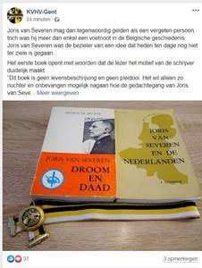

> nieuwsbrief > 2022 - nr. 4
Inhoud
Kaftillustratie:
Toegangskaart tot de VIIIste Landdag van het Verdinaso gepland
in het Brusselse Sportpaleis op 10 september 1939, doch ten
gevolge van de oorlogsdreiging afgelast.
Hernieuwen ledenbijdrage voor 2022
Wie zijn ledenbijdrage van
minimum 29 € nog niet vereffende kan dit alsnog doen en dit het
liefst per omgaande. Dit laat ons toe de overgang van
Studiecentrum JvS naar
JvS Instituut in
goede banen te leiden. Gebruik daartoe het ingesloten
betaalformulier. Vereffening graag via rekening IBAN: BE29 4650
2267 2164 t.n.v. Joris van Severen Instituut, 8870
Izegem
Voor een goed begrip: het *-symbool op uw adresetiket
bevestigt dat u de ledenbijdrage - tevens abonnement op het
Jaarboek en de Nieuwsbrief – wel al betaalde. Ontbreekt
dit *-symbool, dan wordt het
hoogtijd daaraan te verhelpen en alsnog uw bijdrage te
vereffenen. Wie méér dan het minimumbedrag van 29 € overschrijft
boeken we traditiegetrouw als erelid.
Bijgave bij het
Jaarboek 2022
Bij het Joris
van Severen Jaarboek 2022
hebben onze ereleden (zij die spontaan hun jaarbijdrage
verhoogden tot 35 € of meer) een toegift ontvangen, nl. het boek
Oranje Dassen doorgelicht (144 p.), zijnde de
geschiedenis van het Algemeen Diets Jeugdverbond. Een
jeugdbeweging die Joris van Severen hoog in het vaandel droeg en
door velen als ’n neo-Dinaso-organisatie werd geïnterpreteerd.
INHOUD
Jaarboek Joris van Severen 26 (2022)
Met deze aflevering zijn we aan het 26e Jaarboek Joris van Severen
toe. We brengen andermaal een ruime verscheidenheid aan
bijdragen die op een of andere wijze inzoomen op de ondertitel
van deze reeks: Joris van Severen, zijn persoon, zijn
ideeën, zijn invloed en zijn werk.
Vooreerst komt Luc Pauwels aan het woord die, na zijn
recente grote biografie van Joris van Severen, als het ware de
lijn doortrekt met z’n essay Joris van Severen, een begin…
Daarop aansluitend brengt Romain Vanlandschoot de resterende
hoofdstukken van zijn diepgravend essay De laatste weg alleen, Joris van Severen
8 mei 1927 – 29 mei 1929, In het afsluitende
luik van dit essay - waarvan het eerste deel werd opgenomen in
het Jaarboek Joris van Severen 25 (2021) - komen
respectievelijk aan bod: ‘’Een vernietigende, kwetsende en
arrogante rede’, ‘Wil Joris van Severen wel een Directorium?’,
‘Roosendaal helemaal niet rooskleurig’, ‘De meerderheid van het
KVNV is met mij’ en ‘De schaduw van August Borms’.
In Gerard van der Horst
en het Verdinaso in Nederland brengt Ruud Bruijns diens rol en de
verdiensten in herinnering bij het ontstaan en de uitbouw van de
Noord-Nederlandse tak van Van Severens beweging. “Ik weet zeer goed dat gij
de eerste zijt geweest…”, loofde Van Severen hem. Hij
was niet slechts de eerste, doch ook de laatste getrouwe, zo
blijkt.
Toen de Nederlandse regering in
1934 het ambtenarenverbod inzake lidmaatschap van Musserts NSB
afkondigde publiceerden 19 hervormde predikanten een pamflet
tegen deze maatregel. Hun oproep werd naderhand door nog eens
100 predikanten onderschreven. Hun grote bezwaar werd hen
ingegeven door hun antibolsjewisme. Onder hen waren er een
vijftal abonnees van Hier Dinaso!, het wekelijkse
tijdschrift van het Verdinaso. Geen van die vijf was NSB’er en
evenmin hebben ze tijdens de Tweede Wereldoorlog gecollaboreerd
met de Duitse bezetter, wel integendeel: sommigen onder hen
stonden in het daadwerkelijke verzet. Daarover vernemen we meer
in de bijdrage van Henk Tijssen over
De ‘Hier Dinaso!’-lezers onder de hervormde predikanten in de
noordelijke Nederlanden.
Niet onterechte wordt wel eens
beweerd dat in de jaarboekenreeks over Joris van Severen bij
voorkeur aandacht besteedt wordt aan Louis Gueuning en Emiel
Thiers, i.c. dan wat betreft hun rol bij de teloorgang van het
Verdinaso aanvang het jaar 1941. In de bijdrage van de hand van Maurits Cailliau over Het andere
geluid: over de rol van Jef François in 1940-1941 wordt
gefocust op het aandeel van Jef François en Pol le Roy in deze
cruciale maanden. Ook werd daarbij stilgestaan bij de gesprekken
die toen door het Verdinaso gevoerd werden met het Légion
nationale Belge van Paul Hoornaert. Recent verscheen, van de
hand van Lionel Baland, en studie over deze beweging die bij het
uitbreken van de Tweede Wereldoorlog, evolueerde ‘de l’Ordre
nouveau à la Résistance’. We besteden verderop aandacht aan deze
uitgave.
Na het einde van de Tweede
Wereldoorlog zijn tal van pogingen ondernomen om de ideeën die
het Verdinaso nastreefde – de eenheid van de Nederlanden en de
structurering van het maatschappelijk bestel op basis van het
solidarisme – opnieuw te actualiseren. Over één van deze
pogingen brengt prof. em. Hans Nelis, met z’n essay Het gedachtegoed
van een neo-Dinaso-beweging(DSB), als destijds geëngageerd militant van
de DSB, verslag uit.
Afsluitend komt in deze
editie ook Joris van Severen zelf
aan het woord middels zijn Dagboeknotities over de periode
aanvang januari tot einde april 1921. Daarin komt, naast
zijn zorgen om ‘Maine’, ook z’n weerzin tegen alle vormen van
geweld manifest op de voorgrond. Daarnaast ook een
handgeschreven notitie van zijn hand.
Luc Delafortrie’s gedicht Denkend
aan het Verdinaso sluit het jaarboek af.
Dit 26e Jaarboek Joris
van Severen is de laatste editie uitgegeven door het
Studiecentrum Joris van Severen. Doch niet het laatste in de
reeks. Als reeds in de Nieuwsbrief Joris van Severen
aangekondigd fuseren het ‘Studiecentrum Joris van Severen’ en de
‘Stichting Joris van Severen’ in de loop van dit jaar onder de
naam Joris van Severen Instituut, dat vanaf 2023 de
nieuwe uitgever van het Jaarboek Joris van Severen
wordt.
--------------------------------
N.a.v. Jaarboek Joris van
Severen 26 (2022), 208 pp, ill, ISBN 9789076057262,
ledenprijs 29 €, boekhandelsprijs 35 €
De l’ordre nouveau à la
Résistance
Het Nationaal Legioen werd opgericht in 1922 in Luik,
België door de Belgische nationalist, Henry Graff, wiens broer,
een officier in het Belgische leger, werd vermoord in bezet
Duitsland. Deze beweging strekte zich uit over het hele land en
hield zich aan de ideeën van de Nieuwe Orde. Het Nationale
Legioen verlangde geen macht voor zichzelf, maar voor de koning.
Paul Hoornaert volgde Henry Graff aan het hoofd en ontwikkelde
het. Deze geüniformeerde groep ging fysiek de confrontatie aan
met communisten, socialisten en Vlaams-nationalisten. In 1934
nam Paul Hoornaert deel aan het internationale congres van
Montreux in Zwitserland, samen met andere leiders van Nieuwe
Orde-bewegingen uit verschillende Europese landen.
De ideologie van de Nieuwe
Belgische Orde, verspreid door het Nationale Legioen, via het
belangrijkste persorgaan dat zijn naam en pamfletten draagt,
evolueerde in de loop van de tijd. Als deze organisatie soms
sympathie heeft voor het regime in Italië, is ze niettemin diep
anti-Duits. Tijdens de Tweede Wereldoorlog trad ze toe tot de
netwerken van het verzet, opgericht door Belgische
nationalisten, en vocht ze tegen de bezetter. Een aantal
van zijn leden werd door de Duitsers geëxecuteerd en zijn
leider, Paul Hoornaert, stierf tijdens deportatie.
Lionel Baland is een viertalige Belgische schrijver die
gespecialiseerd is in patriottische partijen in Europa en de
geschiedenis van het Belgisch nationalisme. Hij heeft talrijke
boeken over deze onderwerpen gepubliceerd.
____________
N.a.v.
Lionel Baland, La Légion Nationale belge. De l’Ordre nouveau
à la Résistance, Ars Magna, Nantes, 2022, ISBN:
978-2-38356-032-6. Ill., 240 p., 28 €.
De fusie
gerealiseerd: het Joris van Severen Instituut
Naar aanleiding van de Algemene Vergadering 2021 van
het Studiecentrum Joris van Severen – vzw werd gepleit
voor een samengaan met de Stichting Joris van Severen vzw,
die al sinds jaren instaat voor het organiseren van de
herdenkingsplechtigheden te Brugge en te Abbeville en het
onderhoud van het grafmonument aldaar.
Tijdens de voorbije maanden
werden daartoe meerdere gesprekken gevoerd teneinde tot een
fusieakkoord tussen beide vzw’s te komen dat n.a.v. de Algemene
Vergadering 2022 in werking trad onder de naam Joris van
Severen Instituut - vzw.
Binnen het Joris van
Severen Instituut werden ondertussen een drietal
werkgroepen gevormd, waaronder ook de ‘Werkgroep publicaties’,
die voorteen zal instaan voor de redactie en voortzetting van de
jaarboekenreeks en de Nieuwsbrieven.
Voor het lidmaatschap van beide
vzw’s zal dit geen gevolgen hebben: met het ingaan van de fusie
wordt het lidmaatschap automatisch omgezet tot het lidmaatschap
van het Joris van Severen Instituut.
Het Studiecentrum Joris van
Severen werd derhalve ontbonden en vereffend, zoals recent
ook in het Belgisch Staatsblad te lezen stond:
Het Studiecentrum Joris
van Severen verzorgde nog de uitgave en verspreiding
van het 26e Jaarboek Joris van Severen 2022 en de Nieuwsbrieven
Joris van Severen, nummers 3/2022. Dit nummer 4/2022
is een uitgave van het Joris van Severen Instituut,
gevestigd in Izegem.
Vanaf 1 juli 2022 dient met
zich ook hiervoor te wenden tot het secretariaat van het Joris
van Severen Instituut, Nieuwpoortsesteenweg 399/0202,
B.8400 Oostende. Als rekeningnummer voor het betalen van
lidgelden en het aankopen van publicaties geldt voortaan enkel
nog BE29 4650 2267 2164 op naam van het Joris van Severen
Instituut.
Oprichtingsakte
Joris van Severen Instituut vzw
8870
Izegem
Ondernemingsnummer:
0447.359.644
De algemene
vergadering van 25 juni 2022, geldig samengeroepen en
beschikkend over de nodige aantallen inzake aanwezigheid en
meerderheid, heeft besloten de statuten te wijzigen, teneinde
deze in overeenstemming te brengen met het Wetboek van
vennootschappen en verenigingen (WVV).
De volgende
statuten worden aangenomen:
HOOFDSTUK
1 - BENAMING, ZETEL, DOEL EN DUUR
Artikel
1. De
vereniging zonder winstoogmerk draagt de naam Joris van
Severen Instituut.
Artikel
2. De zetel is
gevestigd te Meensesteenweg 191, 8870 Izegem. Hij kan verplaatst
worden door het bestuursorgaan, voor zover die verplaatsing geen
wijziging van de taal van de statuten met zich meebrengt. Het
bestuursorgaan is tevens gemachtigd de zetelwijziging door te
voeren in de statuten.
Artikel
3. De
vereniging streeft een belangeloos doel na en keert, op straffe
van nietigheid, rechtstreeks noch onrechtstreeks enig
vermogensvoordeel uit aan de oprichters, de leden, de
bestuurders of enig ander persoon, behalve voor het in de
statuten bepaald belangeloos doel. De vereniging heeft als
belangeloze doelstelling: de persoon en het werk van Joris van
Severen bestuderen en communiceren aan derden, los van enig
politiek doel. De vereniging streeft het belangeloos doel na in
het kader van één of meer welbepaalde activiteiten die zij tot
voorwerp heeft. Deze activiteiten kunnen zijn: het organiseren
van activiteiten die verband houden met Joris van Severen, zoals
het organiseren van tentoonstellingen, De omschrijving van deze
activiteiten is louter exemplatief en niet limitatief. De vzw
mag alle handelingen ondernemen ter voltooiing van het voorwerp
en ter bevordering van het belangeloos doel voor zover de
opbrengsten hiervan besteed worden aan het belangeloos doel en
in overeenstemming met het voorwerp.
Artikel
4. De vereniging
is opgericht voor onbeperkte duur.
L’Actualité de Joris van Severen
Maurits Cailliau
En
Europe de l’Est resplendit une nouvelle aurore. Ce n’est pas
seulement lors de l’implantation des régimes marxistes mais
également lors de leur effondrement que s’applique la théorie
des dominos. Les Polonais y ont œuvré presque dix ans, les
Hongrois quelque dix semaines, les Tchèques et les Slovaques dix
jours et les Roumains à peine plus de dix heures. Partout éclate
le fiasco fondamental du modèle de société marxiste, partout on
demande des comptes à la Nomenklatura. Partout aussi menace une
carence du pouvoir par suite de la disparition de la main de
fer.
Comment
et par qui sera comblée cette carence du pouvoir ? Les
démocraties parlementaires occidentales proposent-elles une
alternative véritable aux régimes totalitaires déchus ?
Saura-t-on voir à temps ce que sont en réalité nos « golden
sixties » et l’État-providence s’aviser à temps qu’ici
aussi, fût-ce avec moins de contrainte, tout est réglé du
berceau à la tombe ? Par exemple l’écheveau confédéral, grâce
auquel on dépouille dans ce pays (la Belgique) les
« communautés » et les « régions » de leur
identité, est-il en mesure d’apporter un soulagement dans la
lutte des nationalités que l’Europe de l’Est ne manquera pas de
rencontrer ?
Ce
sont-là toutefois des questions rhétoriques dont seules les
années à venir pourront nous donner la réponse. Pour l’heure on
ne peut que formuler des attentes, exprimer l’espoir que la
liberté retrouvée reçoive un contenu tout à fait judicieux et
que cette liberté soit traduite en autant de libertés qu’il en
faut à l’homme pour pouvoir – tant spirituellement que
matériellement – être véritablement homme,
« personne ». C’est alors que le fameux « ex
oriente lux » regagnera en actualité et que l’Est nous
offrira la lumière d’une société à l’échelle humaine, où
personne et collectivité s’épanouiront pleinement.
Lors
du renversement des dictatures marxistes, l’élan religieux a
joué un rôle non négligeable dans les pays de l’Europe de l’Est.
Pendant des décennies, l’Église y a littéralement vécu dans les
catacombes ce qui l’a sauvegardée des modes modernes qui ont
conduit l’Église d’Europe occidentale au seuil de
l’anéantissement. La foi y est restée le ferment de la société.
À l’inverse de l’Occident, les fidèles savaient vers quel but
« ils étaient tous ensemble en marche ». Cette foi
vivante, qui sut garder intact le sens de la consécration, nous
permet d’espérer que le plat matérialisme occidental se révèle à
peine y avoir une apparence de chance. Et cela signifie qu’on
réussira peut-être à y frayer une troisième voie entre le
cul-de-sac marxiste et l’avenue abaissante,
« nivelante » du libéralisme. Ce n’est pas par hasard
que l’ouvrage de référence moderne sur « la troisième
voie » a comme auteur un Européen de l’Est, Ota Sik1.
Kaft
van het overvloedig geïllustreerde ‘Boergondisch’ dubbelnummer
57-58 van het ‘Magazine des Amis
de Jean Mabire’ (herfst 2021), waarin deze bijdrage
verscheen.
Jean
Mabire (1927-2006) was een Frans-Normandisch schrijver,
historicus en journalist. In 1958 werd hij als paraofficier
ingezet in Algerije. In 1963 debuteerde hij als historicus met
een essay over Pierre Drieu la Rochelle. Hij schreef meerdere
boeken over de Tweede Wereldoorlog waaronder ook de
geschiedenis van de Franse vrijwilligers aan het Oostfront.
Als Normandisch regionalist publiceerde hij veel over de
geschiedenis van Normandië.
Dans
le cadre de cette évolution, le complexe d’idées de la
« révolution conservatrice » revêt une actualité
nouvelle. Ce qui nous convie, un demi-siècle après le meurtre
d’Abbeville, à placer une figure de proue comme Joris van
Severen sous les feux de la rampe, pas seulement à cause de sa
personnalité mais tout autant à cause de ses idées.
Dans
son article Armin Mohler et la révolution conservatrice 2, Luc
Pauwels déclare à juste titre que « qui part à la recherche
du courant jeune-conservateur dans nos pays est bien inspiré de
ne pas perdre de vue les concepts de solidarisme et de
personnalisme ». Et d’ajouter : « le plus nettement
jeune-conservateur, et quasiment le seul qui ait fait école chez
nous, est Joris van Severen, (pour qui) des mots-clés comme
« ordre » et « élite » et une typique pensée
juridiquement structurante, qui le distingue tant du
nationalisme flamand protestateur et manifestateur (ont été
caractéristiques). » Lui, Joris van Severen, est du reste
l’unique représentant aux Pays-Bas de la révolution
conservatrice qui n’ait jamais utilisé personnellement les
termes « révolutionnaire-conservateur »pour exprimer
sa propre position 3.
Le
plus stupéfiant est bien que le corpus d’idées de Joris van
Severen, dans son essence, n’ait guère ou pas besoin
d’actualisation. Lui-même savait mieux que quiconque combien la
forme de son instrument de travail – le Verdinaso – était liée à
l’époque.
Il
s’inscrivait, en effet, dans l’atmosphère et la mentalité,
marquées par l’époque, de l’ensemble des mouvements européens d’
« ordre nouveau » de l’entre-deux-guerres. Ce n’est
pas le lieu ici de s’étendre là-dessus. Il n’en faut que
davantage fixer son attention sur les objectifs ultimes de Van
Severen : il ne se satisfaisait pas de pétrir des « soldats
politiques » utilisables, mais s’efforçait de former des
hommes, des personnalités. Cet objectif lui faisait dépasser les
facettes si datées de la plupart des mouvements- « ordre
nouveau » du théâtre politique européen de l’époque. Cela
explique aussi pourquoi et en quoi ses disciples se distinguent
jusqu’à nos jours du type de militant moyen d’alors et de
maintenant.
Afin
de s’en faire une idée, il suffit de prendre comme fil d’Ariane
quelques topoi de Van Severen : on arrive ainsi à pénétrer au
cœur de sa personnalité et de son combat qui s’articulent autour
des concepts de « liberté », d’ « ordre » et
d’ « élite ».
C’est
cela la liberté : ayant acquis la maîtrise de son être propre,
pouvoir faire et faire ce qu’en conscience on est convaincu de
devoir faire.
Une
telle conception de la liberté est personnaliste et dynamique.
Elle pose la maîtrise de soi en préalable à la capacité de
liberté. La liberté comme incitation « à… » par
opposition au fait d’être libre « de… ». La liberté
est liée au devoir de conscience et au sens des responsabilités.
Une
si haute conception de la liberté est diamétralement opposée au
concept libéral de liberté qui régit l’esprit du temps en
Occident : être libre de devoirs et de responsabilités vis à
visde soi-même et de la (ou des) collectivité(s) ; un esprit du
temps qui dicte que l’individu puisse renoncer au devoir de
devenir une personne et qui empêche la masse de devenir
collectivité, un esprit du temps où tôt ou tard la liberté se
résorbe elle-même dans l’anarchie.
Pour
nous la vie culmine dans l’accomplissement de la personne
humaine. Mais nous savons que cet accomplissement n’est possible
que dans l’ordre et là où règne l’ordre.
Des
penseurs comme E. Mounier, N. Berdiaev, G. Marcel,
R. Guardini, J. H. Walgrave notamment 4 ont creusé la
notion de personnalisme, lui ont donné sens et contenu. À notre
connaissance, Van Severen n’a jamais utilisé ce concept. Mais
que son idée de l’homme fût profondément personnaliste, ses
conceptions en la matière le prouvent. Son regard sur l’homme et
la société incluait davantage qu’une correction aux courants
alors en progrès et qui tendaient de l’individualisme au
collectivisme. Bien que ces courants sussent vaincre
l’individualisme au profit du sentiment collectif, ils se
trompaient en fait d’adversaire. Ce n’est pas en effet le
collectivisme qui s’oppose à l’individualisme mais bien le
personnalisme. Seule la personnalité – qui suppose
nécessairement, outre la conscience de soi, le sentiment d’être
enraciné dans une société de vie, la connaissance de ses racines
– est immune vis-à-vis des solutions de facilité du
collectivisme et capable d’empêcher la société de devenir une
simple masse.
Toutefois
: si l’accomplissement de la personne humaine est le but ultime,
ce but ne peut être atteint que dans la mesure où règne l’ordre.
L’ordre, tant dans l’homme qu’autour de l’homme, dans la vie
ensemble. Cette condition sine qua non, empruntée à la pensée de
Saint Thomas d’Aquin, a poussé Joris van Severen à rechercher
sans trêve les conditions de l’ordre dans tous les domaines.
À
l’époque – au cours de l’entre-deux-guerres – tout autant que
maintenant, il était difficile d’établir par quoi il fallait
commencer. Pourtant, fidèle à l’antique sagesse grecque qui
recommande : Améliores le monde, commence par toi-même, Joris
van Severen a accordé la plus grande attention à la formation de
soi et à la formation de personnalités qui partagèrent ses
conceptions et comme une phalange formèrent peu à peu la
garnison d’un bastion imprenable à partir duquel le désordre
pourrait être combattu sur tous les terrains.
Après
l’armistice du 11 novembre 1918, il était apparu une fois
de plus que le silence des armes n’apportait pas la paix et
combien une fois encore « la guerre se poursuivait par
d’autres moyens ». La lutte entre les nations passait
quelque peu à l’arrière-plan pour laisser place à la lutte entre
factions opposées au sein des nations. La lutte des classes et
les oppositions au sein des communautés linguistiques
suscitaient des foyers jamais éteints d’agitation. Le régime des
partis prouvait sa fondamentale faiblesse face aux crises
socio-économiques qui apparaissaient, cependant que le dernier
grain de savoir-vivre politique était jeté par-dessus bord dans
une interminable suite de scandales politiques.
Partout,
Joris van Severen plaidait la nécessité de mettre un terme au
chaos et rétablir de relations ordonnées. Le solidarisme n’était
certes pas une formule-miracle, mais s’inspirait de la nécessité
d’un changement de mentalité qui remplacerait le modèle
conflictuel par un modèle d’harmonie lors de la recherche de
solutions. Partant des nombreuses sociétés qui, comme des
cercles concentriques circum-évanescents, donnent à la vie de
l’individu sa dimension, van Severen ne voyait de salut que dans
une démocratie organiquement articulée qui d’emblée serait
garante d’une véritable autorité qui s’affirmerait dans tous les
domaines.
La
lutte que nous menons est de plus en plus menée dans un esprit
d’aristocratie véritable, créant un style, caractérisé par une
sobre conscience de soi, une fierté sans malice, une sincérité,
une correction et une politesse résolues et, à travers tout
ceci, une attitude vitale imposante et conquérante.
La
qualité face à la quantité, les meilleurs face aux plus nombreux
ou, en d’autres termes, l’aristocratie face à la démocratie. Ce
sont là des normes incompatibles avec l’exercice de la politique
dans un système parlementaire qui repose sur le principe
« un homme, une voix », mais est en fait régi par des
intérêts partisans et porté par une oligarchie partisane – et où
il est moins question de maintenir des principes ressentis comme
justes et de réaliser ses objectifs propres que, de quelque
manière que ce soit, de continuer à participer à l’exercice du
pouvoir et (surtout) aux prébendes qui y sont attachées 5. Joris
van Severen ne pouvait que traiter par le mépris ces sortes de
pratiques. Elles lui étaient suspectes au regard de ses
conceptions élevées en matière de politique, laquelle doit avoir
comme premier objectif le bien-être général de la polis. Ce
bien-être général pouvait selon lui être le mieux garanti par la
mobilisation des élites assoupies et leur sens du service. Aussi
l’ordre social auquel il aspirait serait-il construit et porté
par les élites dont les principales étaient à ses yeux :
l’aristocratie
du sang
l’aristocratie
de l’intelligence
l’aristocratie
du travail consciencieux
l’aristocratie
de l’héroïsme
l’aristocratie
du savoir-vivre
Ainsi
le concept d’aristocratie signifiait en premier lieu pour Joris
van Severen une tournure d’esprit et l’attitude qui en découle,
laquelle s’oppose diamétralement à la mentalité bourgeoise et à
tout ce qui s’y est incorporé depuis 1789. Pour lui, le vieil
adage « le style c’est l’homme » avait gardé son
contenu de valeur intrinsèque : l’attitude intérieure détermine
la façon de s’extérioriser et de se comporter ; l’impératif de
service vient pour ainsi dire de l’intérieur, appartient
quasiment aux réflexes.
Être
fidèle à van Severen signifie se tenir dans le temps, dans sa
propre époque, et même déjà dans l’avenir 6.
Plus
haut, nous avons, au sujet des (r)évolutions en marche en Europe
de l’Est, exprimé l’espoir que « la troisième voie »
puisse y ouvrir de judicieuses perspectives d’avenir. Si cet
espoir se réalisait, on ne pourrait échapper à l’actualité des
leitmotive rappelés par nous sous la forme où Joris van Severen
les a formulés, respectés et poursuivis.
Ces
solides pensées qui toujours réapparaissent contiennent
également un message révolutionnaire pour notre modèle de
société occidental, cela va de soi. La formule shakespearienne
«something rotten in the state» est ici également, fût-ce dans
de moins dramatiques proportions, à l’ordre du jour. Ne laissons
pas tout à la charge des autres ; prenons nous aussi pied dans
notre propre époque, afin d’assurer notre avenir.
In
deze rubriek verwijzen we zonder veel commentaar naar recente
publicaties waarin Joris van Severen en/of het Verdinaso
vermeld worden. We citeren de meest treffende passussen
woordelijk zonder daarin volledigheid na te streven. We
verzoeken onze lezers, met ons, uit te zien naar publicaties
die voor deze rubriek 'stof' kunnen leveren en ons kopie van
de betreffende passages toe te sturen.
Kristien
Ik moet je iets bekennen: voor het eerst in mijn leven
heb ik iets van Kristien Hemmerechts gelezen. En het is me niet
eens tegengevallen. In haar recente roman Hubertina
(over Hubertina Aretz) komt Joris van Severen overigens ook twee
keer voor.
P 300: “Bij de invasie in 1940 had de Belgische regering
niet alleen Duitse staatsburgers gearresteerd, maar ook
Vlaams-nationalisten, die zij als staatsgevaarlijke vijanden
beschouwde. Anders dan de Israëlieten konden zij vrij snel naar
België terugkeren, mar dat maakte het onrecht er niet minder om.
Een van hen, Joris van Severen, had het niet overleefd. Hij was
in Abbeville door Franse soldaten afgemaakt, als een kreupel
paard, zonder proces, zonder recht van verdediging, zonder
aanklacht zelfs.”
En op p 309: “Hoe kon er vergiffenis bestaan voor de
artsen die gevangenen moedwillig hadden mishandeld in plaats van
verzorgd? Hoe kon er vergiffenis zijn voor de bewakers die de
gevangenen urenlang blootvoets in de sneeuw lieten staan? Hoe
kon er vergiffenis zijn voor X, die mensen in nood had
opgelicht? Of voor de soldaten die Joris van Severen met een
nekschot hadden afgemaakt?”
Zeker op het eerste citaat valt historisch een en ander
af te dingen, maar ik moet toegeven dat ik het boek met respect
geschreven vond.
__________________________
N.a.v. Kristine Hemmerechts, Hubertina (Aretz),
de Geus, 2022, ISBN. 9789044546025, 22,50 €.
KVHV:
kweekvijver voor verrechtsing
Twee
andere opvallende oud-leden van het KVHV zijn Joris van Severen,
die in 1931 de fascistische partij Verbond van Dietsche
Nationaal Solidaristen (Verdinaso) oprichtte, en
Reimond Tollenaere, propagandaleider van de fascistische partij
Vlaams Nationaal Verbond (VNV) en later ook commandant van de
Zwarte Brigade.
Dit was
een Vlaamse organisatie van nazi-gezinde militairen binnen het
Vlaams Nationaal Verbond (VNV), actief van 1941 tot 1944. Nu kan
je zeggen dat er altijd rotte appels in een studentenvereniging
kunnen zitten en dat wie daar toch over begint, zich schuldig
maakt aan guilt by association.4
Het
KVHV weigert echter wel afstand te nemen van figuren als Joris
van Severen. Op 18 mei 2020 deelt KVHV-Gent bijvoorbeeld een
foto van twee boeken over Joris van Severen op hun Facebookpagina met volgend bovenschrift:
Twitter
KVHV-Gent
Beide
boeken bevatten tenslotte bijlagen en unieke foto’s die helpen
een menselijk gezicht te geven aan een van de meest invloedrijke
figuren in het Vlaanderen van de eerste helft van de 20e eeuw”.

En op
20 mei 2020 postten ze een foto van Van Severen vergezeld van een
korte biografie. Die eindigt met: “Joris van Severen blijft een
van de meest controversiële figuren uit de Vlaamse geschiedenis.
Desalniettemin blijft van Severen door zijn betrokkenheid in ons
Verbond, de strijd om gelijkberechtiging voor het Vlaams en de
Vlaming in Vlaanderen en zijn tragische dood een persoon die
passende aandacht verdient”.
Eind
2021 nodigde KVHV Gent ook historicus Luc Pauwels uit aan de
UGent die er een lezing gaf over van Severen. In de
beschrijving van het Facebook-evenement plaatsen ze een citaat van van Severen zelf: “Ik zal de
strijd voeren tot de zege of tot ik erbij val.”
Op deze
intellectuele basis wil de studentenbeweging dus aan
elitevorming doen. Voormalig praeses van KVHV Gent, Jonas
Naeyaert, legde het enkele jaren geleden zo uit in Humo:
“We
willen een speerpunt vormen. Dat is essentieel in onze werking.
We willen studenten klaarstomen om in het professionele leven
bepaalde agendapunten te bewerkstelligen. We proberen onze leden
te vormen tot mensen met een coherente ideologie.”
Naeyaert
werd na zijn periode bij KVHV hoofdredacteur van de
extreemrechtse website Sceptr en is sinds 2020
persverantwoordelijke van het Vlaams Belang.
Twitter
KVHV-Gent
“Joris
van Severen mag dan tegenwoordig gelden als een vergeten
persoon, toch was hij meer dan enkel een voetnoot in de
Belgische geschiedenis. Joris van Severen was de bezieler van
een idee dat heden ten dage nog niet ter ziele is gegaan. (…)
Beide boeken bevatten tenslotte bijlagen en unieke foto’s die
helpen een menselijk gezicht te geven aan een van de meest
invloedrijke figuren in het Vlaanderen van de eerste helft van
de 20e eeuw”.
_______________________
Donderdag
24
maart 2022.
https://www.dewereldmorgen.be/artikel/2022/03/24/kvhv-kweekvijver-voor-verrechtsing/
Luc Pauwels voorzitter Studiecentrum Joris van
Severen op Doorbraak
1940. Joris van Severen, leider van het Verdinaso, wordt
samen met zijn vriend Jan Ryckoort in Abbeville op laffe wijze
vermoord door Franse soldaten. Zij waren door het toenmalige
Belgische regime gevangengenomen en zonder enige vorm van proces
aan de Franse veiligheidsdiensten uitgeleverd. Een straat in
Abbeville draagt nog steeds de naam van zijn moordenaar.
Nochtans verdedigde Joris van Severen een strikte
neutraliteitspolitiek, net zoals koning Leopold III, en was er
geen reden om hem van mogelijke collaboratie te verdenken.
In de namiddag van 10 mei 1940
werd hij door de Staatsveiligheid aangehouden. Diezelfde dag
werden Joris van Severen en Jan Ryckoort op transport geplaatst,
via Oostende en Duinkerke naar Béthune. Vier dagen later
arriveerden de uitgehongerde gevangenen in Abbeville. Op 20 mei
1940 begonnen Franse soldaten een wilde schietpartij. Na een
korte onderbreking werd Van Severen, bij een poging om een
Franse officier tot rede te brengen, met een kogel in het
achterhoofd en in de buik geveld. Ryjckoort werd met
bajonetsteken afgemaakt. De schuldigen bij de Belgische overheid
werden nooit vervolgd.
Bron:
https://doorbraak.be/20-mei-net-binnen-joris-van-severen-vermoord/